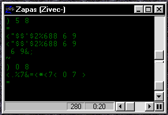

Anything you see in the bots window can start a trigger  The green text is what is sent from furcadia Make a trigger as follows:
You cant just copy and past things over zMUD uses some of the things sent as other things and wont recognize it. For example when someone talks it looks like: (Mys': hello zMUD thinks the ( is (*) witch will be explained later if you put {} around it the ( wont be looked at as (*) {(}Mys': hello Now this trigger will only be set off by Mys' if you put a * where Mys' name is it wont be counted * can take the place of anything if there is nutting where the * is the trigger will not be recognized {(}*: hello now when ever someone says hello the bot will do what ever is in the command
If you want your bot to say "hello name" when someone says "Hello Bot" heres how you do it use the pattern from above {(}*: hello now we want it to be just for someone saying hello to the bot so well put the bots name in {(}*: hello bot this will work if you just want it to say hello back but what if you want it to say hello Mys' back this is where you use the (*) instead of using the * use the (*) and anywhere in the command you put %1 it will put what ever is in the (*) {(}(*): hello bot Example:
This will make the bot say "hello Mys'" when Mys' says "hello bot" Whispers work the same way Example:
if you use more then one (*) just use %1 %2 and so on Pattern: {(}(*): (*) Command: "%1 said %2
You don't need to make several different triggers for capital letters exp. "hello bot" "HELLO BOT" take the words you want to use and place them like so {WORD|word} {(}(*): {hello|HELLO} bot now when someone types either "hello bot" or "HELLO bot" the bot will respond
Use a ; to indicate a new line in the command Example:
"hello; or "hello;m 9 This will make the bot say "hello" and take a step north east
*TIP* You can use a ~ inserted of {} exp. ~((*): hello |
||||||||||||||
Created By Mys' |